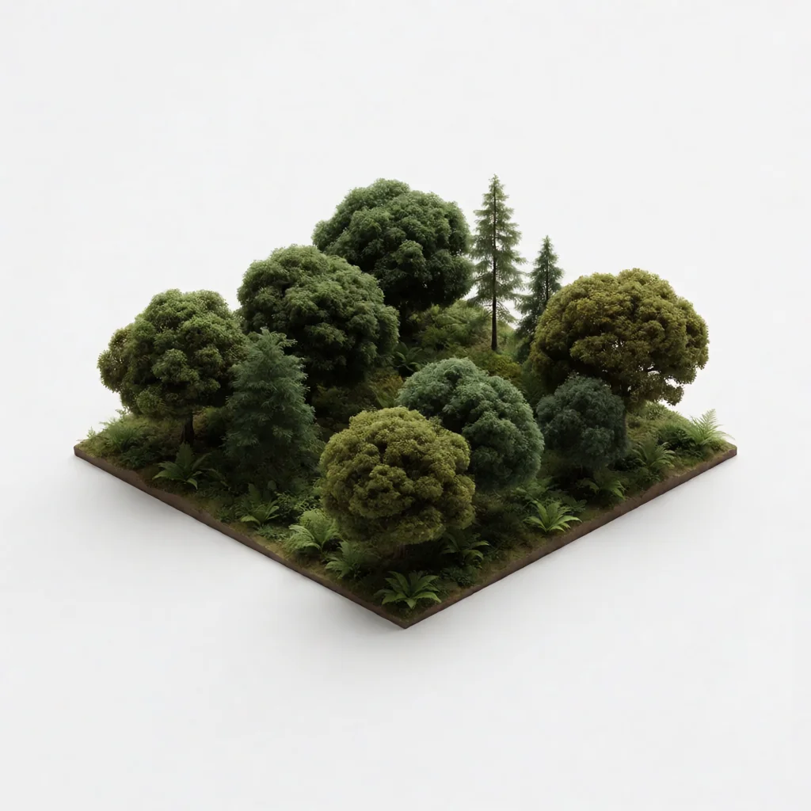

NORTH GARDEN
Every season, a little greener.
Field health score78/100
Growth this month12%
Growing area240m²
Greenhouse Monitoring
LiveMon 06 Aug22°C
Sunny 11:40 | 53%

Activity Overview
Track sales, leads, performance.
No activities scheduled
Agricultural Insights
Field Health Score
78/100
12%vs last monthAvg 70May78/100
Weather
30°
NORTH GARDEN